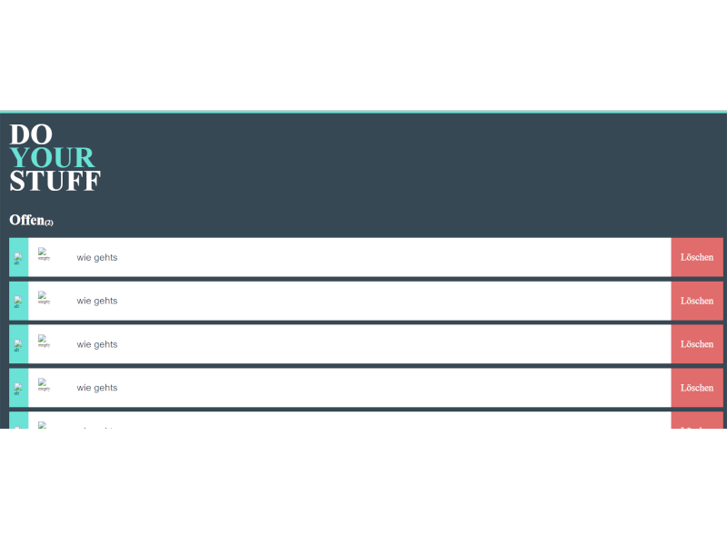
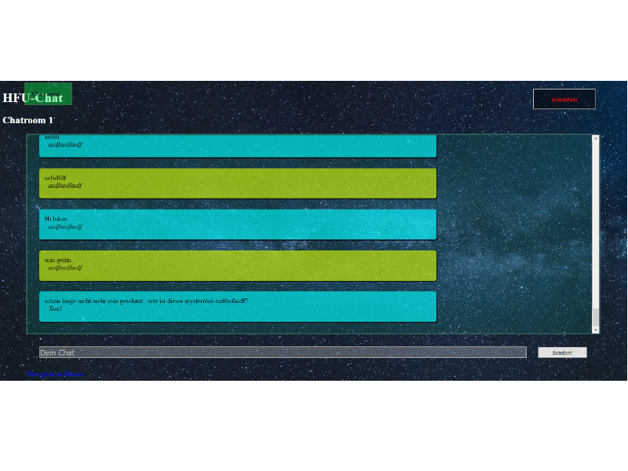
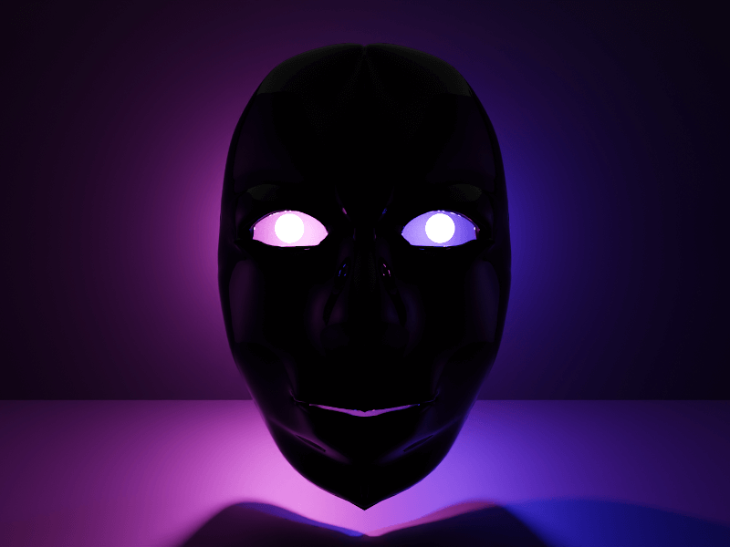

Sehr geehrte Damen und Herren von Imsimity!
Sie befinden sich gerade auf meinem provisorischen Portfolio. Vielen Dank, dass Sie sich die Zeit nehmen, dieses anzuschauen. Diese Version habe ich kurzfristig eingerichtet, da mein geplantes Portfolio noch in der Entwicklung ist. Bitte verzeihen Sie mir das spartanische Design und ich hoffe, dass Sie trotzdem einen aussagekräftigen Eindruck gewinnen können.
Web
Angular (Tutorial)
Seit diesem Semester beschäftige ich mich neben meinem Studium mit Angular, da ich es für ein sehr spannendes Framework halte. Repräsentative Projekte habe ich bislang zwar noch nicht abgeschlossen, jedoch kann ich auf ein Repository verweisen, welches ich nach dem Tutorial von Unleashed Design erstellte. Im Tutorial wird unteranderem auf Binding, dem Zusammenspiel mit einem Server und Datenbanken eingegangen.
GiS Abschlussarbeit
Den Onlinechat habe ich im Rahmen meines Studiums der Medieninformatik in Furtwangen entwickelt. Hierbei handelte es sich um die abschließende Prüfungsaufgabe. Er wurde mit TypeScript, NodeJS, HTML, CSS, MongoDB und Heroku erstellt. Dafür habe ich die Note 1,0 erhalten.
Sollten Sie Interesse haben, den Onlinechat auszuprobieren, bitte ich Folgendes zu beachten:
- bei der Erstanmeldung ist die Entscheidung zu treffen, ob der User sich zum ersten Mal anmelden oder sich nur einloggen will
- zu beachten ist weiterhin, dass das Hochfahren des Heroku-Servers eine gewisse Zeit dauern kann
Praktikums Aufgabe
Die Firma SCHANZE UND HORN hat mir die Möglichkeit gegeben, durch eine Praktikumsaufgabe tiefer in verschiedene Themengebiete einzutauchen. Die Aufgabe beinhaltet das Erstellen von Wireframes, Personas, Userstorys etc. Die Zielsetzung beinhaltet, dass sich der Kunde damit aussuchen kann, ob er sein Screendesign in HTML und CSS umsetzt, oder Printanzeigen designt. Ich habe mich zur Programmierung meines Screendesigns entschieden. Dabei bin ich zum ersten Mal mit XAMPP, PhpMyAdmin, MySQL und PHP in Berührung gekommen. Anstatt mit NodeJS habe ich den Server mit PHP aufgesetzt und auch keine MongoDB-Befehle mehr geschrieben, sondern SQL. Meine Planung sieht vor, das Projekt im nächsten Schritt öffentlich zugänglich zu machen.
Arbeiten im Praktikum
In meinem Praktikum habe ich an diversen Websites mit WordPress gearbeitet. Drei davon sind mittlerweile online. Zwei werden evtl. nach der Beendigung des Praktikums online zugänglich sein. Gearbeitet wurde hauptsächlich mit dem BeaverBuilder Plugin als Front-End Editor, Gravity Forms für Formulare und Yoast SEO für Search Engine Optmierung. Von mir wurden die Seiten Kriewe - Computerservice, Eb Peroutkaerstellt. Außerdem habe ich aktiv dabei mitgeholfen, dass Layout auf der Seite Bilger Exklusiv zu entwerfen.
GiS - Shop

Den Onlineshop habe ich im Rahmen meines Studiums Medieninformatik in Furtwangen erstellt. Die Produkte sollen nur als Platzhalter dienen. Gebaut wurde mit TypeScript, HTML, CSS. Außerdem wird der Local Storage angesprochen. Es kann zu Problemen auf Mozilla und Edge kommen.
Zum Shop (bitte mit Humor nehmen)
Portfolio (in Arbeit)

Mein eigentliches Portfolio ist noch nicht fertig erstellt. Viele, der darin enthaltenen Texte, dienen noch als Platzhalter. Außerhalb von Studium und Praktikum, habe ich mich mit HTML und TypeScript Animationen auseinander gesetzt. Außerdem habe mich auch mit HTML Canvas beschäftigt.
3D Modeling
Uboot
Modelliert mit Blender, im Rahmen des Kurses Computer Grafik an der Hochschule Furtwangen.
Fusee Panzer
Modelliert mit Blender und programmiert in C# mit der GameEngine Fusee, im Rahmen des Kurses Computer Grafik an der Hochschule Furtwangen. Fokus der Aufgabe war das "Assets-Picking".
Fusee Arm
Programmiert in C# mit der GameEngine Fusee, im Rahmen des Kurses Computer Grafik an der Hochschule Furtwangen. Fokus der Aufgabe lag auf der Transformation von Objekten.
Erste Unity Versuche
Meine ersten Versuche in Unity. Nachdem ich Ihre Ausschreibung am Wochenende gesehen habe, wollte ich mich direkt in Unity ausprobieren. Ich hatte bereits Kontakt mit der Game Engine im letzten Semester, da meine Freundin in ihrem Psychologiestudium eine Simulation für ihre Bachelorarbeit verwendet hatte. Seit dem letzten Wochenende beschäftige ich mich intensiv mit Unity.
Gesicht
Ein Gesicht, modelliert in Blender mit zwei unterschiedlich farbigen Lichtquellen als Augen.
Würfel
Modelliert mit Blender, mit zwei sich bewegenden Lichtquellen und einem Würfel, der sich jeweils um die x-, y-, und z-Achse um 360° dreht. Das erste Projekt, welches ich ohne jeglichen Einfluss von Tutorials erstellt habe.
Lukas Willmann
Mail: LukasWillmann@gmx.de
Hier geht es zu meinem Git-Repository